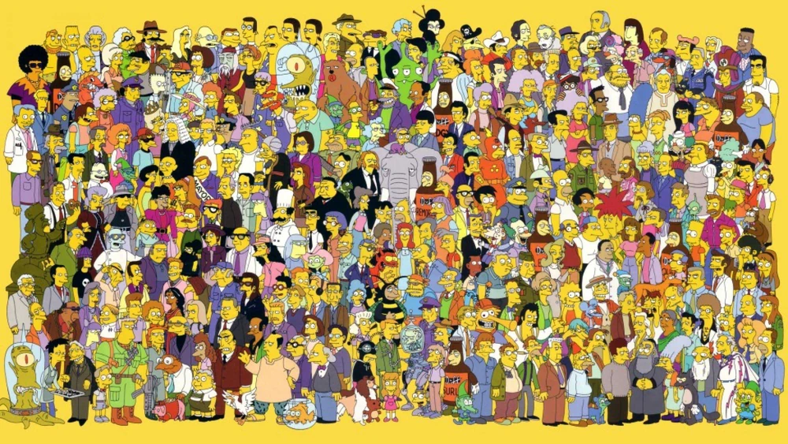

"The Simpsons" features a diverse and memorable cast of characters. Here are some of the main ones:
Homer Simpson: The bumbling, lovable father of the Simpson family. He works at the Springfield Nuclear Power Plant and is known for his love of doughnuts, beer, and laziness.
Marge Simpson: The patient and caring mother of the family. She is known for her distinctive blue hair and her role as the moral backbone of the household.
Bart Simpson: The mischievous and rebellious 10-year-old son. He is known for his catchphrases like "Eat my shorts!" and his constant pranks.
Lisa Simpson: The intelligent and ambitious 8-year-old daughter. She excels in school, plays the saxophone, and often serves as the voice of reason.
Maggie Simpson: The quiet, pacifier-sucking baby of the family. Despite her silence, she often has moments of surprising insight and action.
Apu Nahasapeemapetilon: The owner of the Kwik-E-Mart convenience store, known for his catchphrase, "Thank you, come again!"
Mr. Burns: The wealthy and power-hungry owner of the Springfield Nuclear Power Plant. He is often depicted as the antagonist.
Ned Flanders: The overly cheerful and devoutly religious neighbor of the Simpsons.